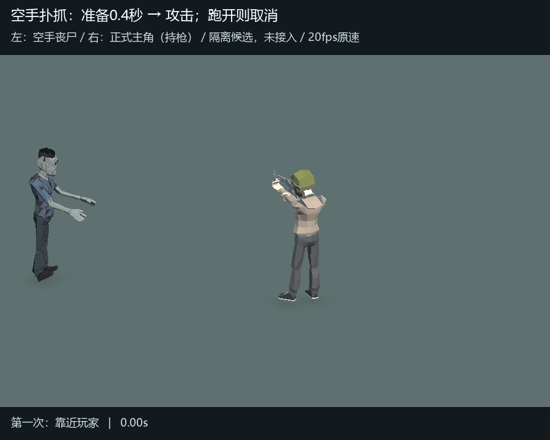
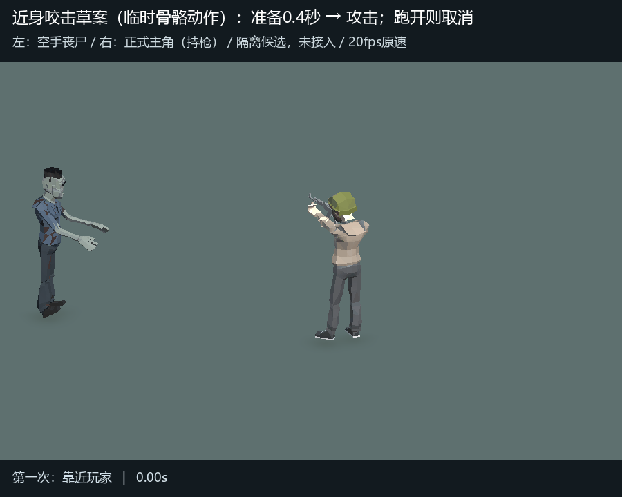
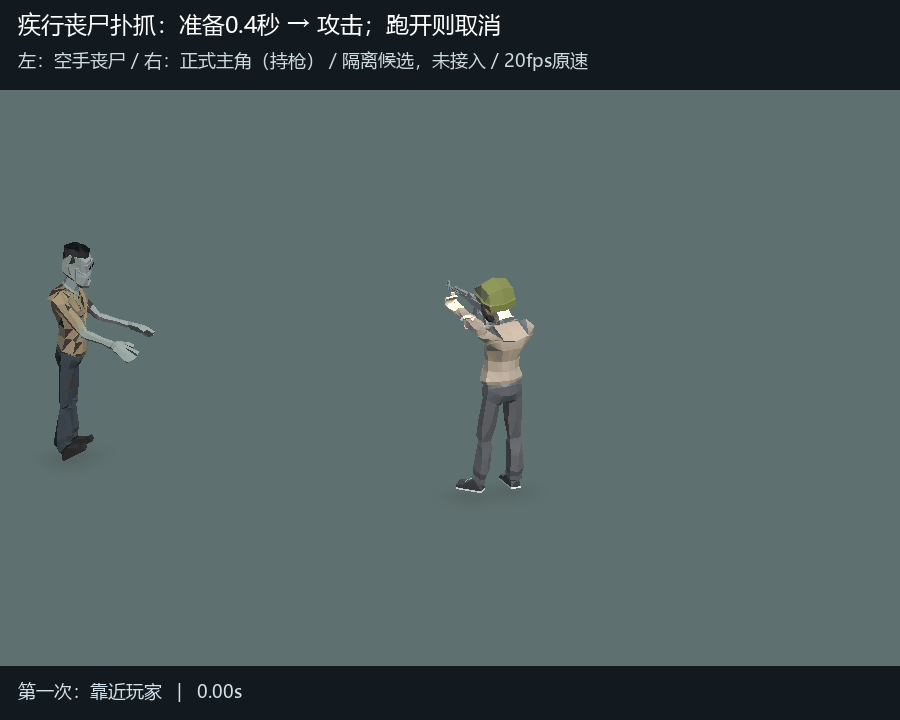
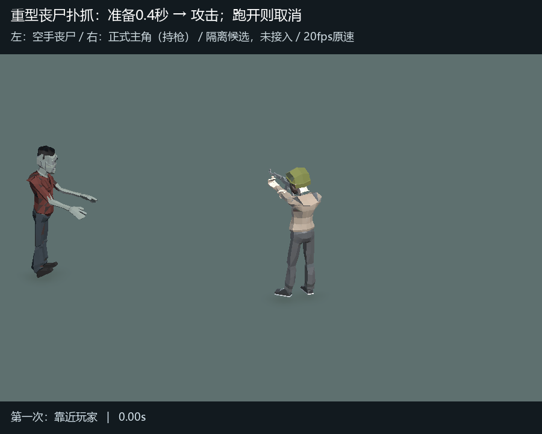

丧尸只用空手：抓挠、近身咬击
上一版持刀候选已被否决。本页所有左侧丧尸都没有武器；右侧持枪者是正式主角，用于同框比较。0.4秒前摇和跑开取消继续保留。
扑抓：复用现有丧尸攻击片段
靠近后抬臂准备，持续贴近才出手；第二次演示中途跑开，取消并追击。

近身咬击：临时动作草案
用当前丧尸克隆叠加探身和头部前倾，仅展示咬击方向。现有模型没有独立下颌骨，尚无嘴部开合或正式撕咬片段；本段不是已接入的完整撕咬动作。

查看另外两类丧尸的空手扑抓


正式模型克隆、保持原尺寸；每段4秒、20fps。未修改正式Prefab、动画、控制器或战斗代码，不是当前实战录像。具体动作仍待采用后接入。